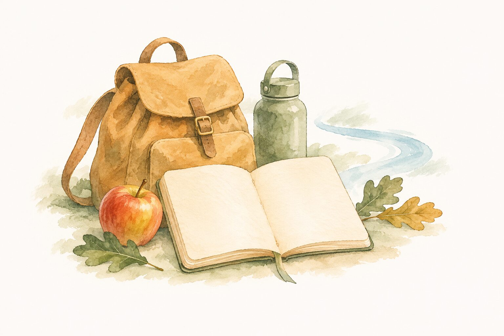

À composer à votre rythme
Mon séjour à Ceilhes
Vos sorties, vos rencontres et vos bonnes adresses, réunies au même endroit.
Sur les fiches, choisissez « Ajouter à mon séjour ». Votre sélection reste dans ce navigateur, sans compte et sans envoi de données. Elle n'est pas synchronisée avec vos autres appareils. Retrouvez aussi nos quatre programmes de séjour.
Un carnet dans votre navigateur
JavaScript est nécessaire pour retrouver et modifier votre sélection. Les programmes de séjour, les randonnées et les bonnes adresses restent consultables et imprimables sans cette fonction.
Votre séjour commence ici
Gardez une balade, un producteur ou une adresse qui vous plaît. Vous retrouverez votre sélection sur cette page.

Ce carnet garde vos idées, sans effectuer de réservation. Avant votre départ, vérifiez les ouvertures, les dates des événements et les conditions d'accès sur les fiches d'origine.